Bài 4: Thiết kế và quản trị website với công cụ
Nội dung bài học
1. Giới thiệu
WordPress là một phần mềm nguồn mở (Open Source Software) được viết bằng ngôn ngữ lập trình website PHP và sử dụng hệ quản trị cơ sở dữ liệu MySQL cũng là bộ đôi ngôn ngữ lập trình website thông dụng nhất hiện tại. WordPress được ra mắt lần đầu tiên vào ngày 27/5/2003 bởi tác giả Matt Mullenweg và Mike Little. Hiện nay WordPress được sở hữu và phát triển bởi công ty Automattic có trụ sở tại San Francisco, California thuộc hợp chủng quốc Hoa Kỳ.
WordPress được phát triển nhằm phục vụ đối tượng người dùng phổ thông, không có nhiều kiến thức về lập trình website nâng cao. Các thao tác trong WordPress rất đơn giản, giao diện quản trị trực quan giúp bạn có thể nắm rõ cơ cấu quản lý một website WordPress trong thời gian ngắn. Đây là nội dung sẽ trình bày bên dưới.
Nếu muốn cài đặt và phát triển website dựa trên mã nguồn WordPress, bạn có thể tải mã nguồn WordPress tại https://wordpress.org/ sau đó tự cài đặt một website WordPress trên host (máy chủ) riêng của mình và tự vận hành, phát triển.
2. Các bước tạo website với WordPress
Truy cập vào tên miền chính thức của WordPress: https://wordpress.com
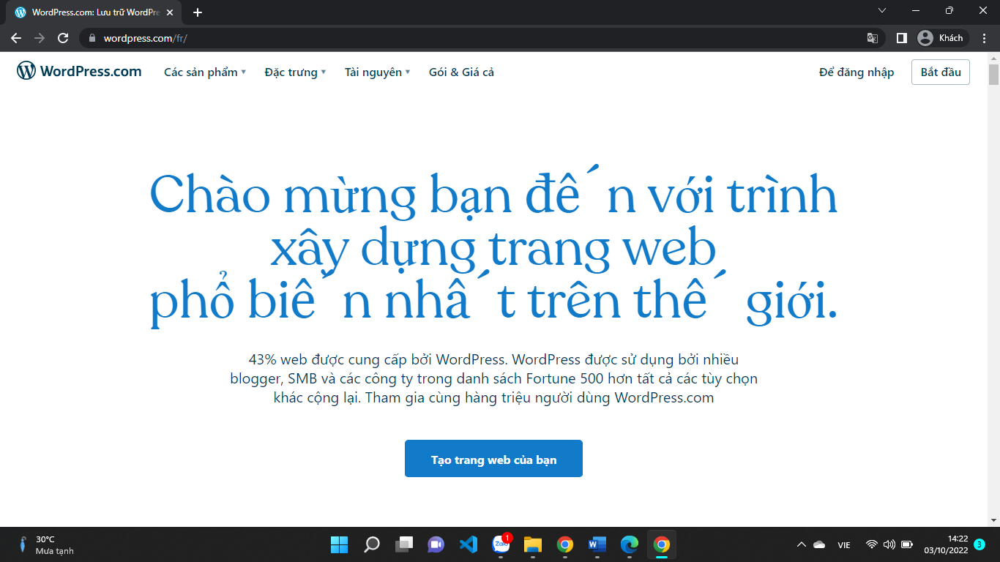Tiếp tục với "Tạo trang web của bạn"

Bạn cần có 1 Account (Tài Khoản) để sử dụng WordPress, để thuận tiện hơn trong việc sử dụng lâu dài. Hãy đăng nhập bằng tài khoản Google (Gmail).
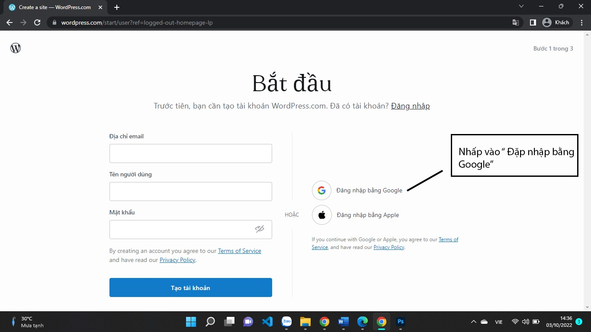Sau khi tạo tài khoản và đăng nhập thành công Wordpress sẽ yêu cầu chúng ta chọn 1 tền miền. Ví dụ:
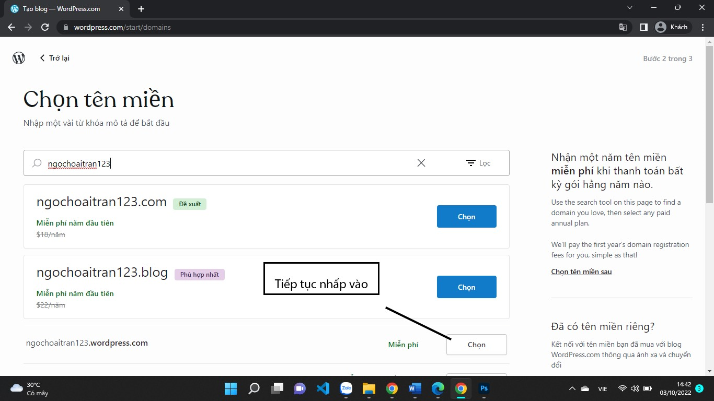Lưu ý: WordPress cung cấp nhiều gói (plan) tùy theo mục đích sử dụng (tham khảo tại https://wordpress.com/pricing/). Mới làm quen chúng ta có thể chọn gói miễn phí (Free) nhưng gói này không cho phép bạn được sử dụng tên miền của riêng mình, bị hiển thị quảng cáo thường xuyên và giới hạn một số chức năng quan trọng. Tiếp tục nhấp vào với "Bắt đầu với một blog miễn phí".
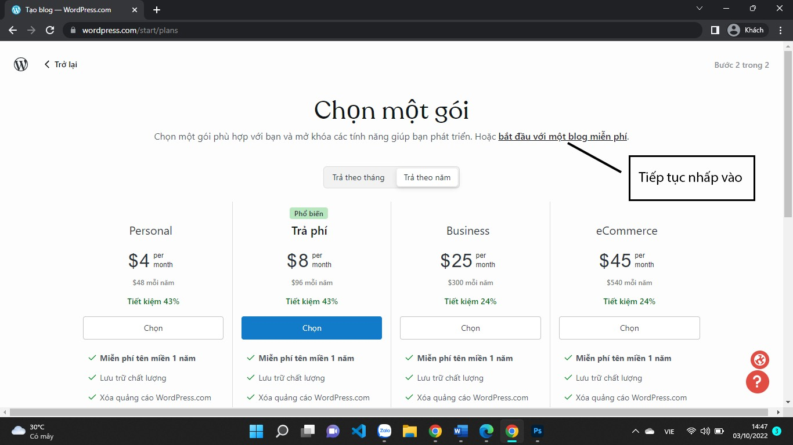Tiếp tục nhấn "Chuyển đến trang tổng quan"
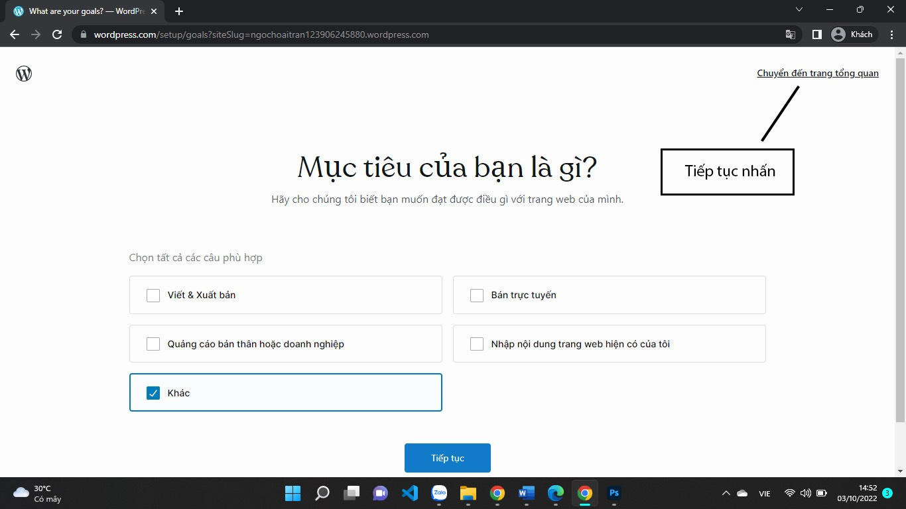Giao diện để chúng ta làm việc với WordPress như sau:
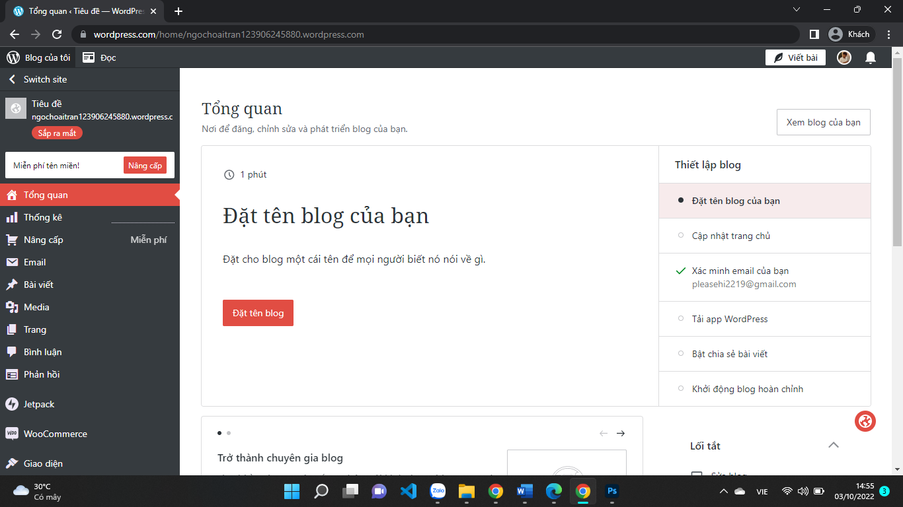Nhấp chọn vào Giao diện -> Chủ đề phía tay trái màn hình:
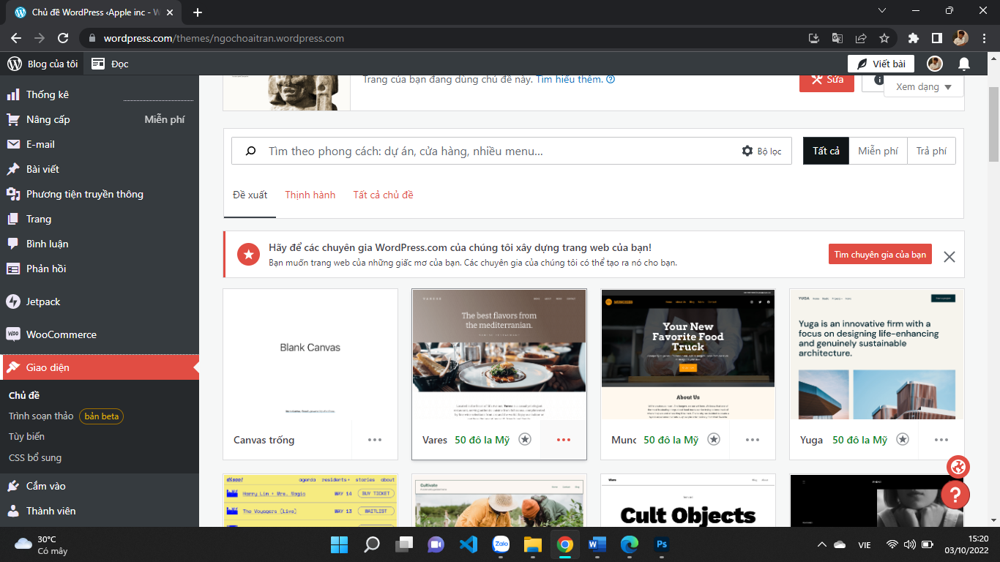Đây là các mẫu web có sẵn chúng ta có thể chọn bất kì 1 mẫu nào và chỉnh sửa nó để tránh mất thời gian phải tạo từ đầu. Click chuột vào dấu 3 chấm bên góc phải của Chủ đề mình muốn sử dụng, nhấp vào Kích Hoạt
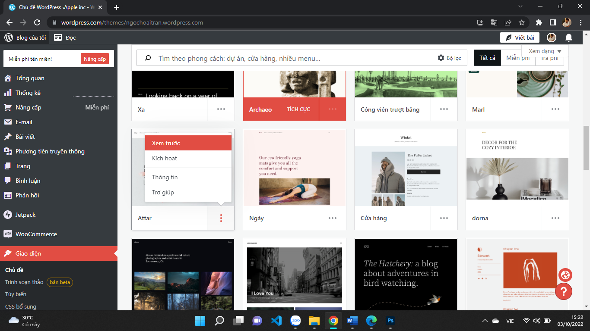Sau khi chúng ta kích hoạt thành công
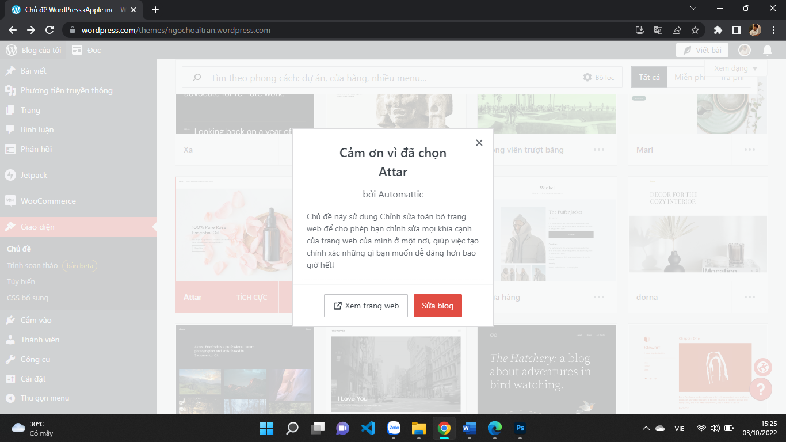Nhấn vào sửa blog để sửa lại mẫu theo ý tưởng chúng ta muốn
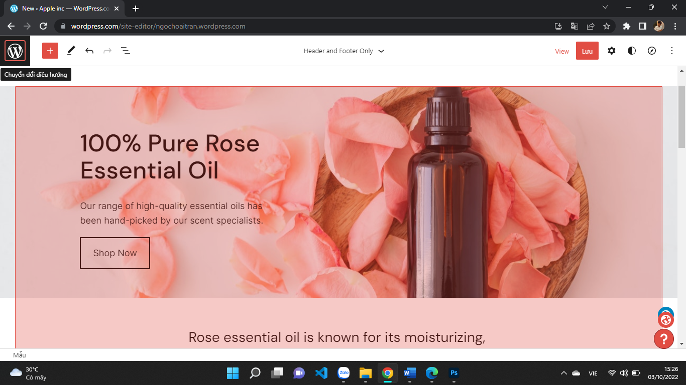Sau khi hoàn tất chỉnh sửa trang web đúng như ý chúng ta muốn tiếp tục nhấn "Lưu". Quay lại màn hình chính Nhấp chọn "Xem blog của bạn"
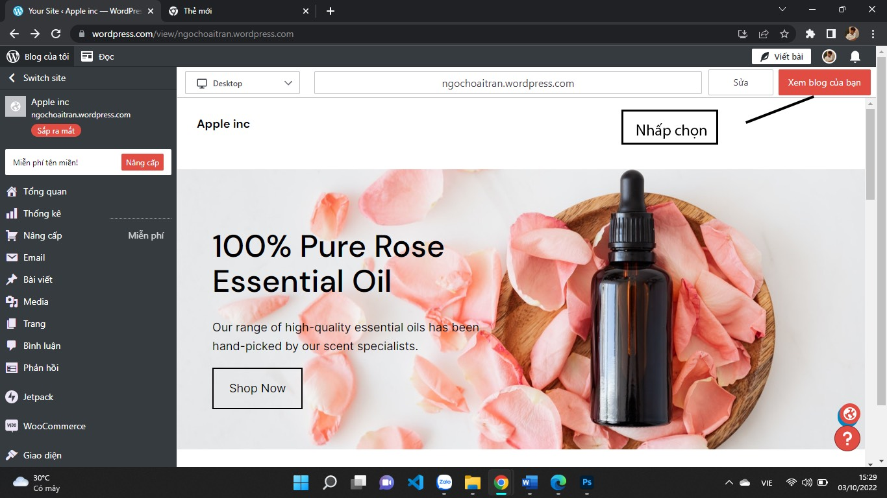Nhấp chọn "Cập nhật khả năng hiển thị":
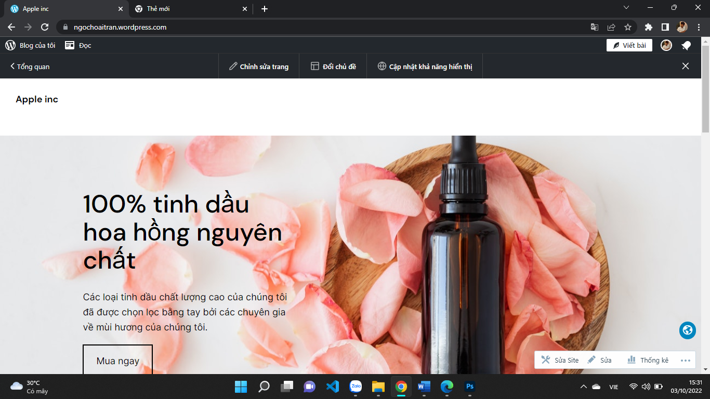Ở bước này chúng ta có thể đặt tên Tiêu đề của trang. Ví dụ: Apple inc, biểu tượng hình ảnh của website v.v..
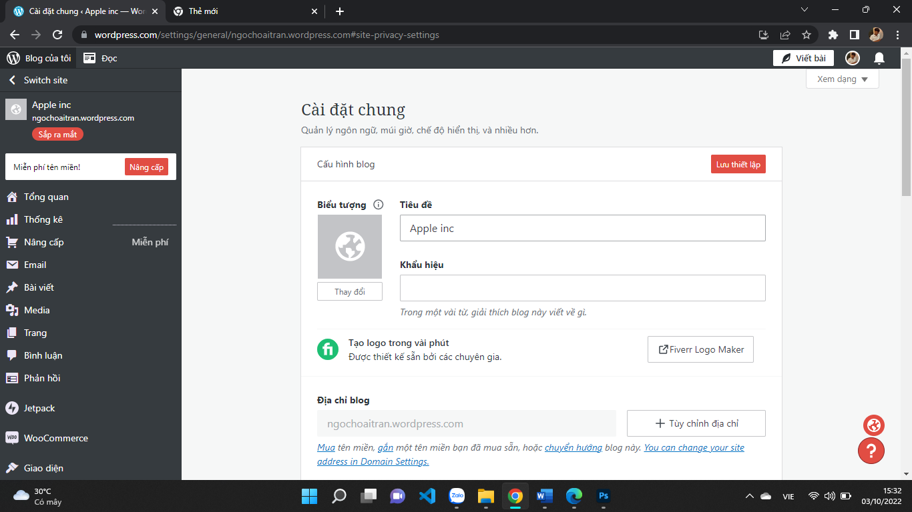Tiếp tục kéo xuống tìm đến mục "Riêng Tư". Ấn chọn Công Khai và lưu thiếp lập.
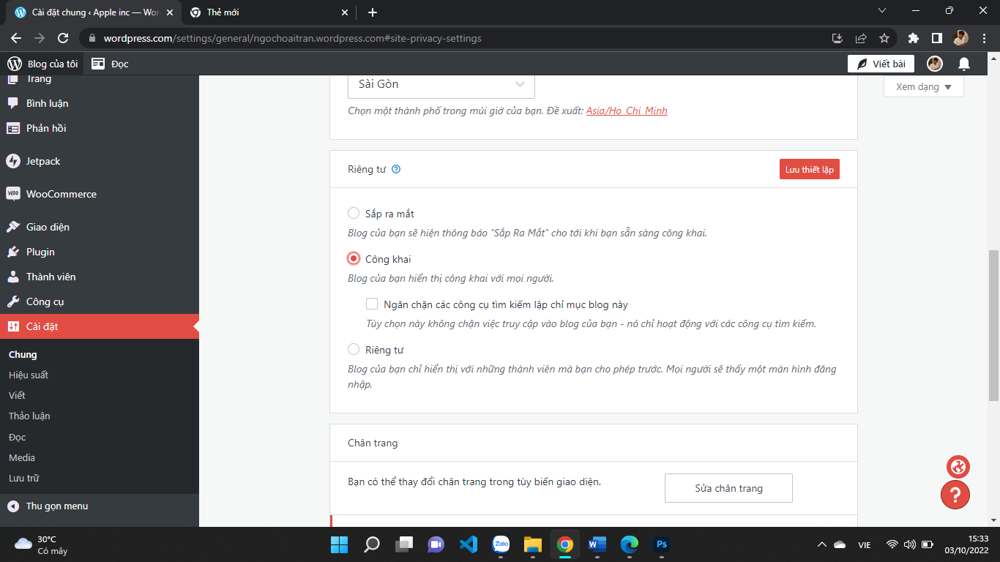Bây giờ chúng ta có thể truy cập trang web với tên miền miễn phí có phần mở rộng .wordpress.com. Tìm hiểu thêm về cách tạo và quản trị website với WordPress tại các cộng đồng trên Internet.